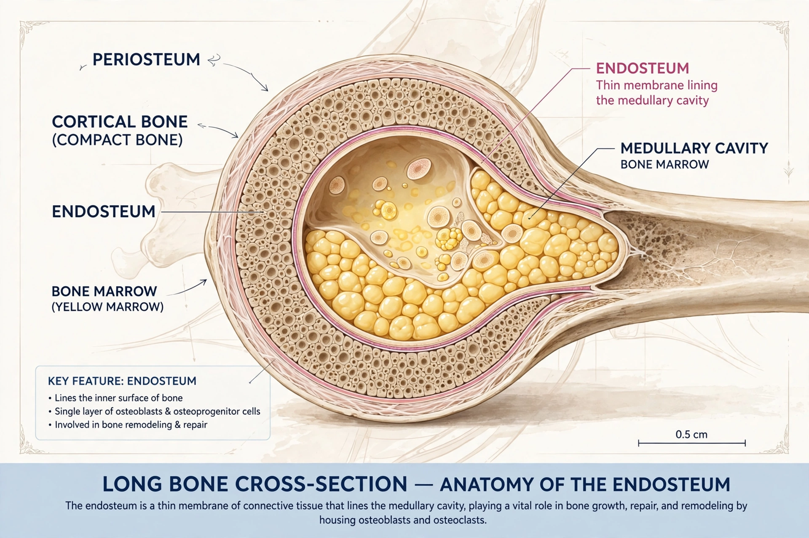

The endosteum (plural endostea) is a thin vascular membrane of connective tissue that lines the inner surface of bone — the medullary cavity, Haversian canals, and the surfaces of trabeculae in spongy bone. It is the internal counterpart of the periosteum, which covers the outer surface of bones.

| Endosteum | |
|---|---|
| Part of | Bone |
| Location | Inner bone surfaces, medullary cavity |
| Function | Bone growth, remodelling, repair |
The endosteum contains osteoprogenitor cells, osteoblasts and osteoclasts in a thin layer of connective tissue. During bone growth and remodelling it participates in appositional growth, resorption and deposition of bone matrix, and fracture repair. Endosteal surfaces are a major site of the bone-remodelling units that maintain calcium homeostasis.
In osteoporosis and ageing, endosteal resorption exceeds formation, widening the medullary cavity and thinning cortical bone. The endosteal niche in bone marrow also supports hematopoietic stem cells. Prolonged malnutrition can increase endosteal activity as bone is resorbed.